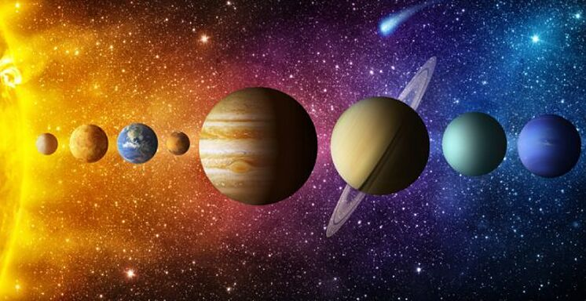
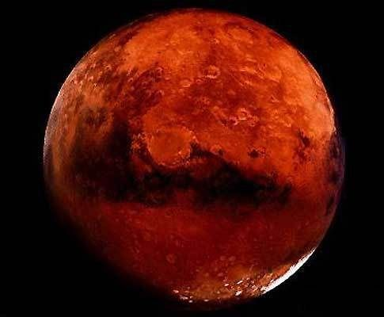

</head>
<body>
<body background="fondo.jpg">


<FONT FACE="Arial"><FONT COLOR="white">
<H3>

<ol start=5>
<FONT FACE="Arial">
<li><a href="#Marte:">Marte.</a></li>
<p>
<li><a href="#Saturno:">Saturno.</a></li>
</ol>
</H3>
<div align="center"></div>

<hr size="6px" color="red" />


<FONT FACE="Arial"><FONT COLOR="green">
<ol start=5>
<li><a name="Marte:"><font size="3">Marte.</A></A></FONT></FONT></li><FONT FACE="Arial"><font size="3">
<P ALIGN="justify"><FONT COLOR="white">Marte es el cuarto planeta en orden de distancia al Sol y el segundo más pequeño del sistema solar, después de Mercurio. Recibió su nombre en homenaje al dios de la guerra de la mitología romana (Ares en la mitología griega), y también es conocido como «el planeta rojo»3​4​ debido a la apariencia rojiza5​ que le confiere el óxido de hierro predominante en su superficie. Marte es el planeta interior más alejado del Sol. Es un planeta telúrico con una atmósfera delgada de dióxido de carbono, y posee dos satélites pequeños y de forma irregular, Fobos y Deimos (hijos del dios griego), que podrían ser asteroides capturados6​7​ similares al asteroide troyano (5261) Eureka. Sus características superficiales recuerdan tanto a los cráteres de la Luna como a los valles, desiertos y casquetes polares de la Tierra.
El periodo de rotación y los ciclos estacionales son similares a los de la Tierra, ya que la inclinación es lo que genera las estaciones. Marte alberga el Monte Olimpo, el volcán más grande y la segunda montaña más alta conocida en el sistema solar, y los Valles Marineris, uno de los mayores cañones del sistema solar. 
</P ALIGN="justify">


<p>
<h3>
<P ALIGN="right">
<a href="#"Marte:"><button>Inicio</button></a>
</P ALIGN="right">
</h3>
<p>


<hr size="6px" color="red" />

<FONT FACE="Arial"><FONT COLOR="green">


<li><a name="Saturno:"><H3>Saturno.</H3></A></A>


<table border="5" style=”width: 100%”>

			
			<colgroup>
				<col style="width: 20%"/>
				<col style="width: 40%"/>
				<col style="width: 40%"/>
			</colgroup>
<TABLE BORDER BACKGROUND="saturno.jpg">		
<tr>
        <th><FONT COLOR="white">Saturno</th>
	<th colspan="2"><FONT COLOR="white">Descubrimiento</th>
</tr>
<tr>     
         <td><FONT COLOR="white">Datos</td>
         <td><FONT COLOR="white"> El primero en observar los anillos fue Galileo en 1610,1​ pero la baja inclinación de los anillos y la baja resolución de su telescopio le hicieron pensar en un principio que se trataba de grandes lunas.</td>
	 <td><FONT COLOR="white">Antes de la invención del telescopio, Saturno era el más lejano de los planetas conocidos y, a simple vista, no parecía luminoso ni interesante.</td>
</tr>
<tr>
       <td><FONT COLOR="white">Categoría</td>
       <td colspan="2"><FONT COLOR="white">Planeta</td>
</tr>
<tr>
       <td><FONT COLOR="white">Estrella</td>
       <td colspan="2"><FONT COLOR="white">Sol</td>
</tr>
<tr>
       <td><FONT COLOR="white">Distancia estelar</td>
       <td colspan="2"><FONT COLOR="white">1 195 000 000 kilómetros</td>
</tr>
<tr>
       <td><FONT COLOR="white">Magnitud aparente</td>
       <td colspan="2"><FONT COLOR="white">-0,24</td>
</tr>
<tfoot>
  <tr>
      <td colspan="3"><FONT COLOR="white"><div align="center"><b>Elementos orbitales derivados.</b></td>
  </tr>
<tr>
       <td><FONT COLOR="white">Periastro o perihelio</td>
       <td colspan="2"><FONT COLOR="white">9,04807635 UA</td>
</tr>
<tr>
       <td><FONT COLOR="white">Apoastro o afelio</td>
       <td colspan="2"><FONT COLOR="white">10,11595804 UA</td>
</tr>
<tr>
	<td rowspan="2"><FONT COLOR="white">Período orbital sideral</td>
	<td colspan="3"><FONT COLOR="white">29 a 167 d 6,7 h </td>
</tr>
<tr>
	<td colspan="3"><FONT COLOR="white">–9,3×108 s</td>
</tr>
<tr>
       <td><FONT COLOR="white">velocidad orbital media</td>
       <td colspan="2"><FONT COLOR="white">9672,4 m/s</td>
</tr>
<tr>
	<td rowspan="2"><FONT COLOR="white">Radio orbital medio</td>
	<td colspan="3"><FONT COLOR="white">9,53707032 UA</td>
</tr>
<tr>
	<td colspan="3"><FONT COLOR="white">1,4267254×1012 m</td>
</tr>
</tfoot>
</table>

<p>
<h3>
<P ALIGN="right">
<a href="#"Saturno:"><button>Inicio</button></a>
</P ALIGN="right">
</h3>
<p>


</body>
</html>


